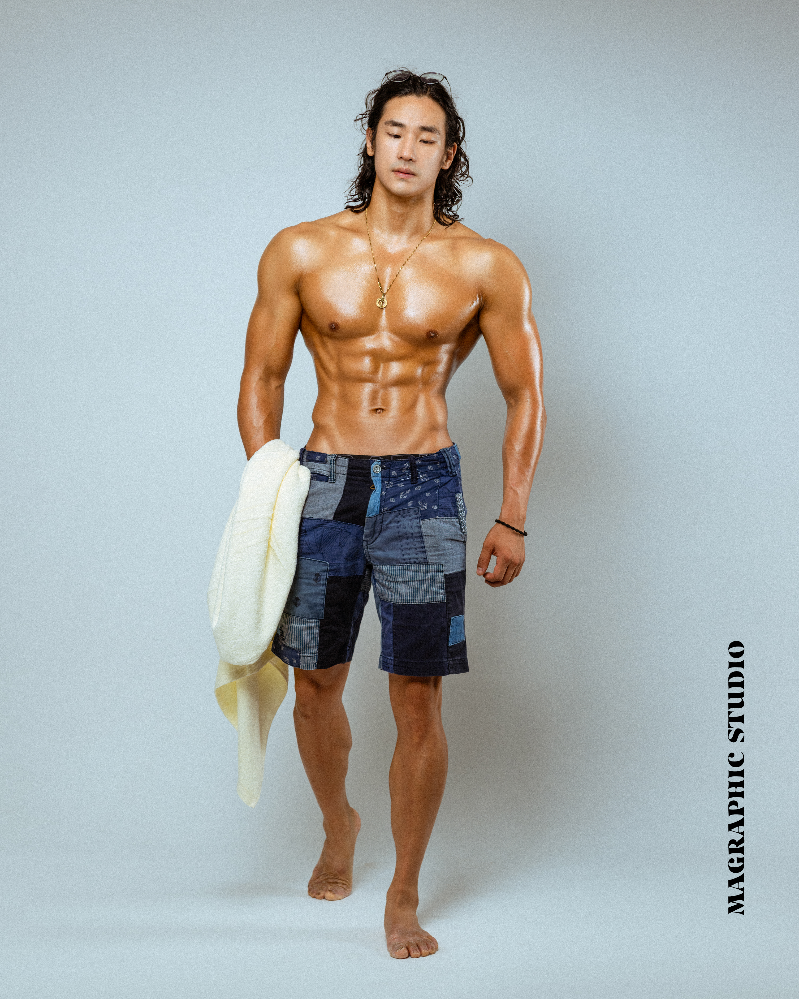
KANG HAN SAE PERSONAL TRAINER1986 원흥점01
PERSONAL TRAINER
강한새 트레이너
움직임의 기본부터,
더 단단한 나를 만드는 운동까지.
지금의 몸과 원하는 변화를 함께 살펴봅니다.
기초 움직임부터 근력 향상까지,
목표에 맞는 트레이닝 방향을 상담해 보세요.
예약 시 ‘강한새 트레이너 상담 희망’을 남겨주세요.
교육 및 자격 살펴보기 ↓
KANG HAN SAE PERSONAL TRAINERPERSONAL TRAINER
움직임의 기본부터,
더 단단한 나를 만드는 운동까지.
지금의 몸과 원하는 변화를 함께 살펴봅니다.
기초 움직임부터 근력 향상까지,
목표에 맞는 트레이닝 방향을 상담해 보세요.
예약 시 ‘강한새 트레이너 상담 희망’을 남겨주세요.
교육 및 자격 살펴보기 ↓TRAINING FOCUS
강한새 트레이너의 주요 전문 분야
자세와 움직임을 살펴보고,
몸을 균형 있게 사용하는 운동을 시작합니다.
근육을 사용하는 감각부터 운동 자세까지.
원하는 몸을 위한 훈련 방향을 잡습니다.
기본 동작을 바탕으로 차근차근.
현재 수준에 맞춰 근력 향상을 목표로 합니다.

LEARN. PRACTICE. COACH.
강한새 트레이너 교육 및 자격
BEYOND THE SESSION
내 몸을 위해 하는 운동인 만큼,
무엇을 어떻게 하는지 아는 것이 중요합니다.
제공된 수업 피드백에는 운동 방법과
일상에서 참고할 내용이 담겨 있습니다.
상담에서 나에게 필요한 관리 방향을 이야기해 보세요.
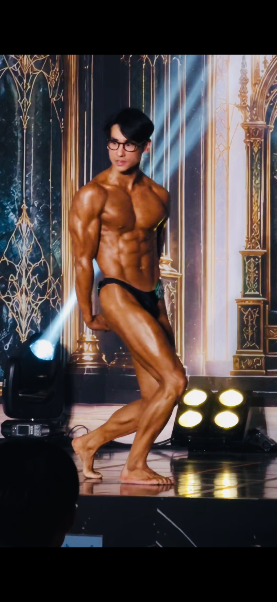
IN PRACTICE / KANG HAN SAEYOUR NEXT CHAPTER
체형 개선 · 바디빌딩 · 스트렝스 프로그램
1986 원흥점에서 목표를 함께 찾아보세요.
QUALIFICATIONS & EDUCATION
강한새 트레이너의 자격증 · 교육 수료증
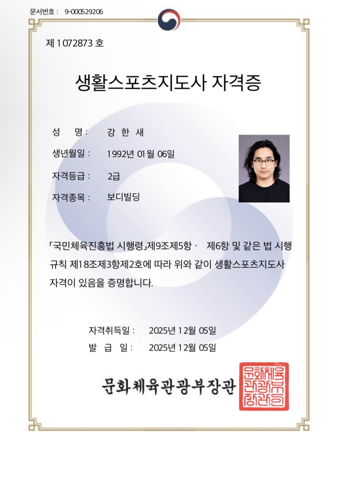
보디빌딩 · 2025년 12월 취득
사진을 누르면 크게 볼 수 있습니다. ↗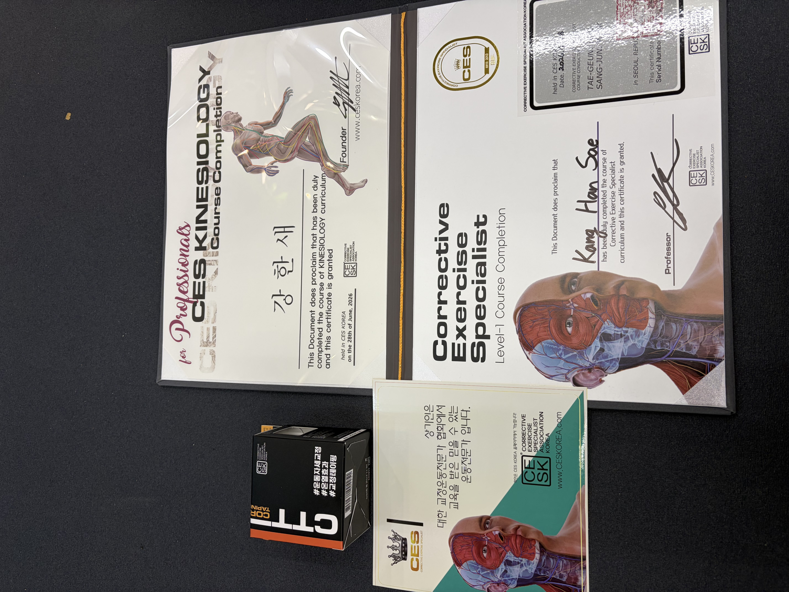
교정운동 Level-1 · Kinesiology
사진을 누르면 크게 볼 수 있습니다. ↗BODY ALIGNMENT / MEMBER STORY
강한새 트레이너 · 체형 개선 사례
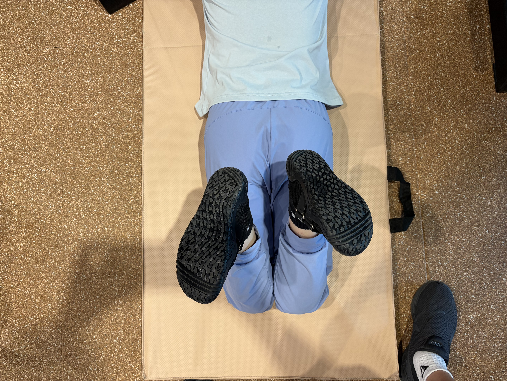
BEFORE 운동 전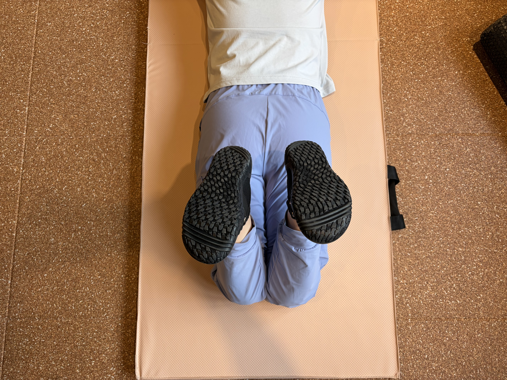
AFTER 운동 후회원의 고관절 움직임을 운동 전·후로 기록한 사례입니다.
현재 움직임을 살피고, 운동 후 변화를 함께 확인합니다.
동일 회원의 운동 전·후 사진입니다. 촬영 각도와 자세에 차이가 있으며, 사진만으로 가동범위나 개선 정도를 수치화할 수는 없습니다. 운동에 따른 변화는 개인마다 다릅니다.
STRENGTH & BODYBUILDING
강한새 트레이너와 회원들의 운동 기록
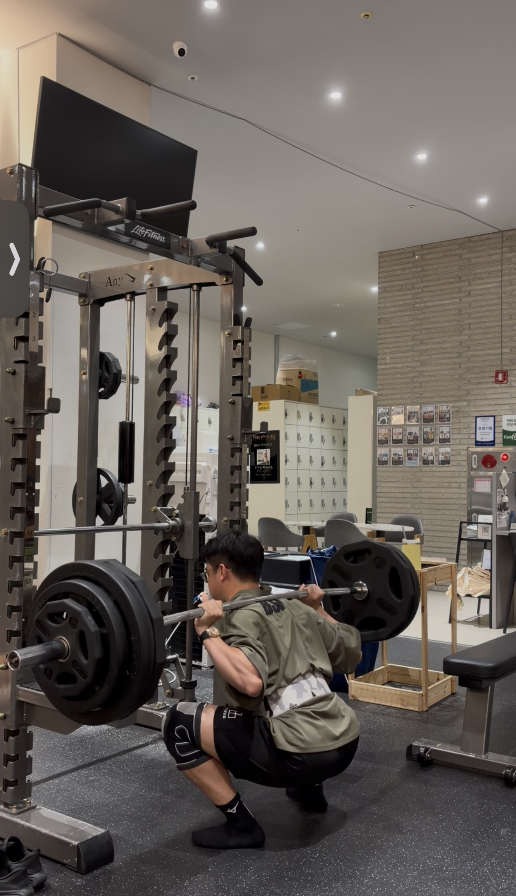
01 / STRENGTH
스쿼트, 벤치프레스, 데드리프트.
기본 동작을 중심으로 힘을 쌓아가는 스트렝스 트레이닝.
현재 운동 수준과 목표에 맞는
프로그램을 상담해 보세요.
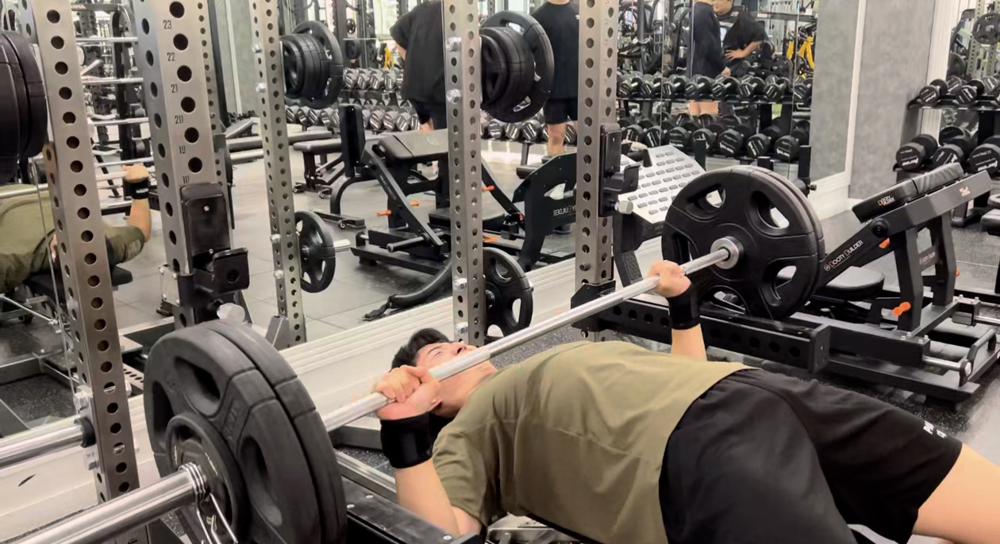
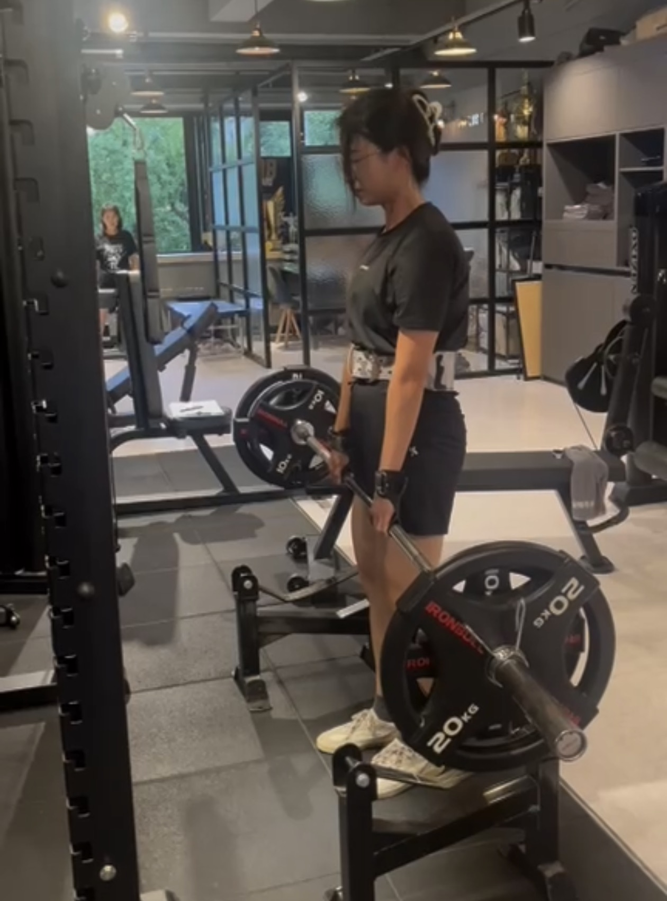
02 / BODYBUILDING
회원들의 상체 근력 운동 현장입니다.
근육을 사용하는 감각과 동작을 익히며 운동을 이어갑니다.
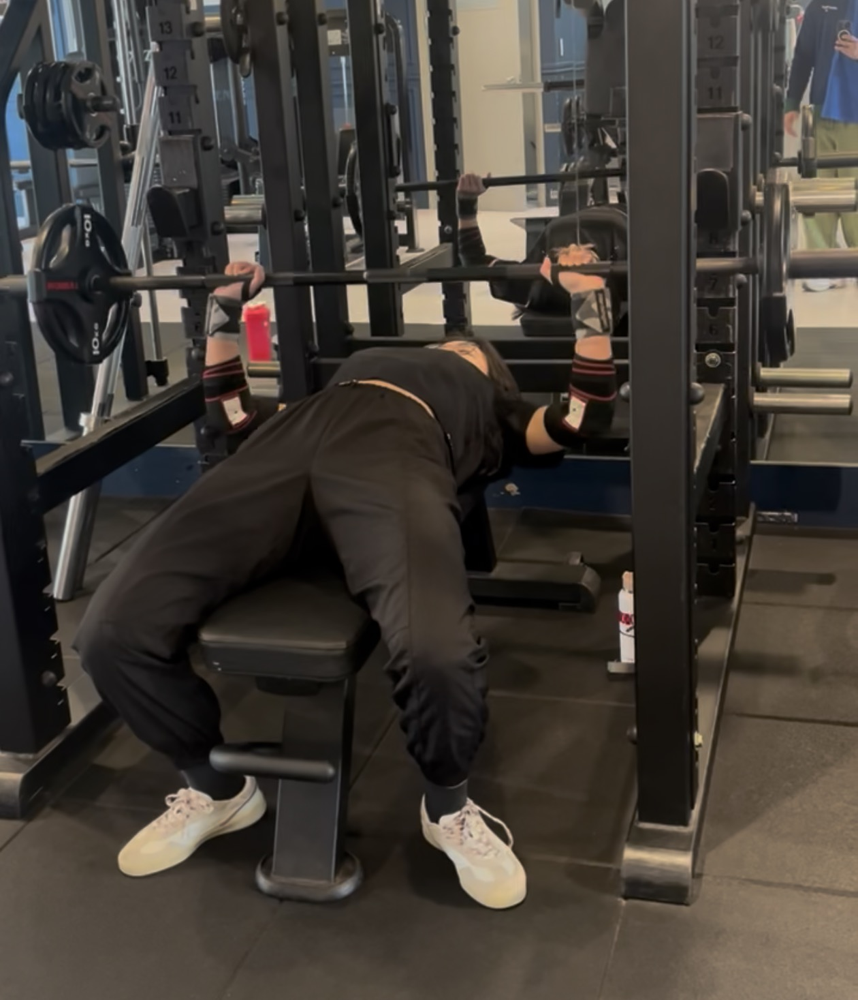
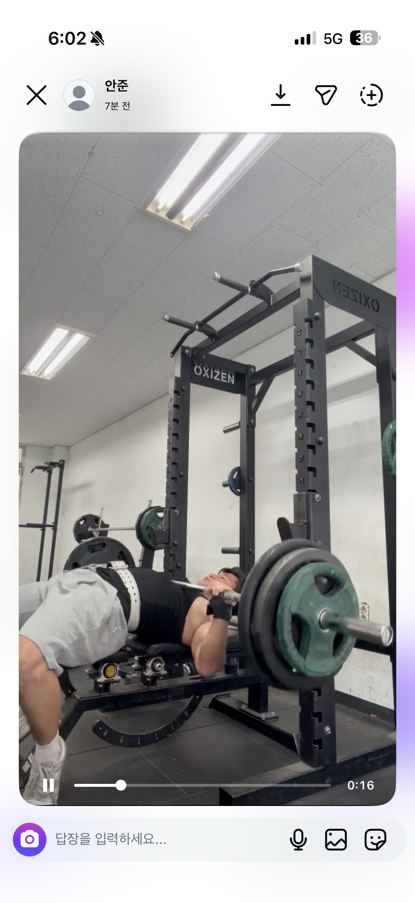